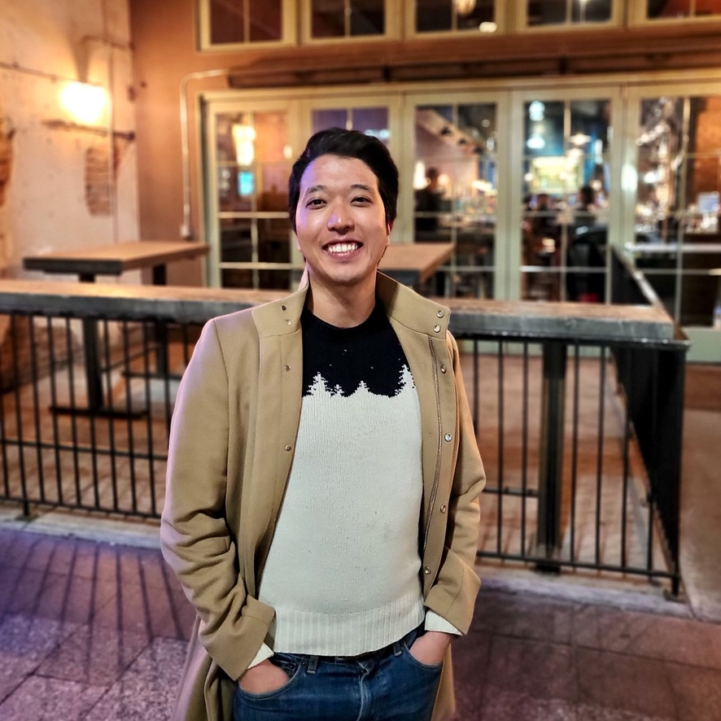

Hi! My name's Young Re, but a lot of people just call me Re (pronounced like Ray). A proud graduate of Duke University (go Blue Devils!), I am currently a software engineer living in Brooklyn, NY with my fiancée and our cat.
At heart, I'm just a confused man-child hoping to make sense of a world that makes no sense. I have been fortunate enough to be on the receiving end of more luck than I will ever deserve, and I can only hope that I will be able to reciprocate the magnanimity that my family, friends, and random run-ins have presented me with.
In my free time, I enjoy skiing, running, camping in national parks, giving our cat some good pets, and ardently following all Duke sports.